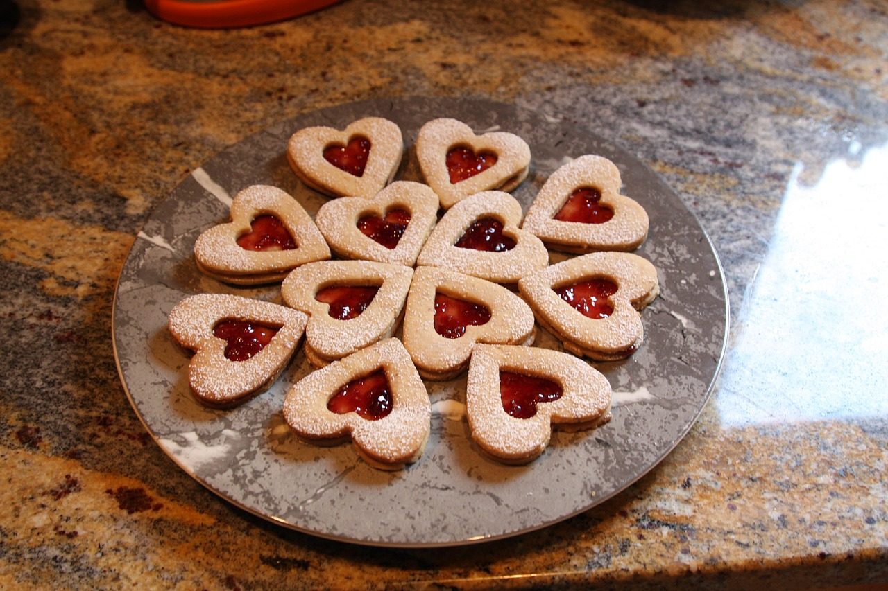

Linzer Hearts (2-3 trays)
Ingredients

1-1/4 cups butter, softened
1 cup sugar
2 large eggs, room temperature
3 cups all-purpose flour
1 tablespoon baking cocoa
1/2 teaspoon salt
1/4 teaspoon ground cinnamon
1/4 teaspoon ground nutmeg
1/8 teaspoon ground clove
2 cups ground almonds
Raspberry jam
Confectioners' sugar
- In a large bowl, cream butter and sugar
until light and fluffy. Add eggs, 1 at a time,
beating well after each addition. Combine the
flour, cocoa, salt, cinnamon, nutmeg and cloves;
gradually add to the creamed mixture and mix well.
Stir in almonds. Refrigerate for 1 hour or until easy to handle.
- On a lightly floured surface, roll out dough
to 1/8-in. thickness. Cut with a 3-in. heart-shaped
cookie cutter. From the center of half the cookies,
cut out a 1-1/2-in. heart or round shape.
- Place on ungreased baking sheets.
Bake at 350° for 10-12 minutes or
until edges are golden brown. Remove to wire racks to cool.
- Spread 1/2 teaspoon jam over the bottom of the solid cookies.
Sprinkle cutout cookies with confectioners' sugar; carefully place over jam.